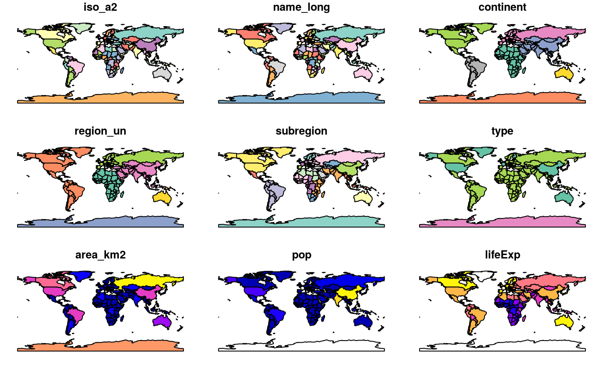
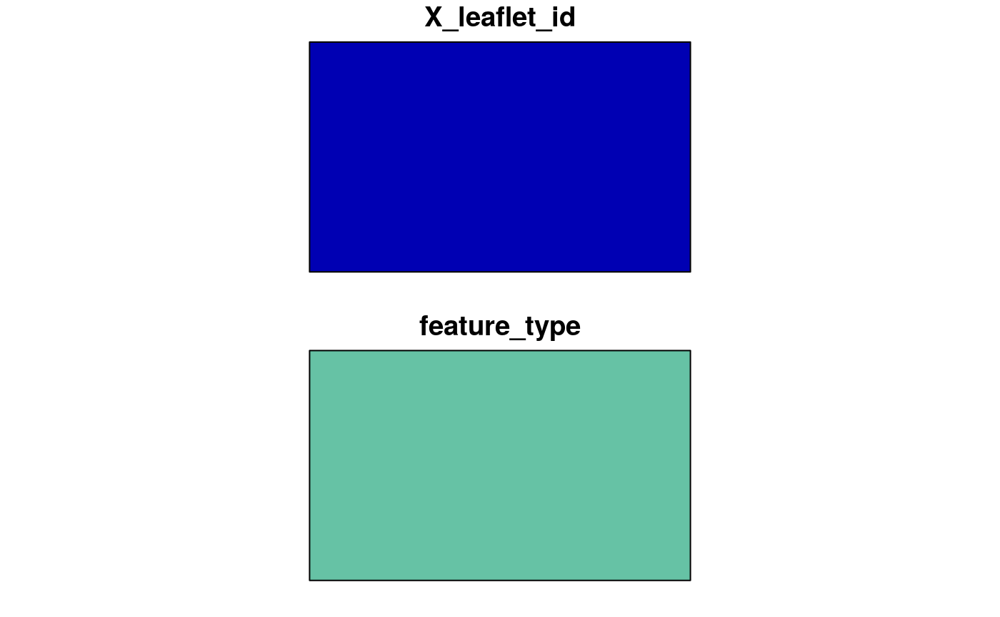
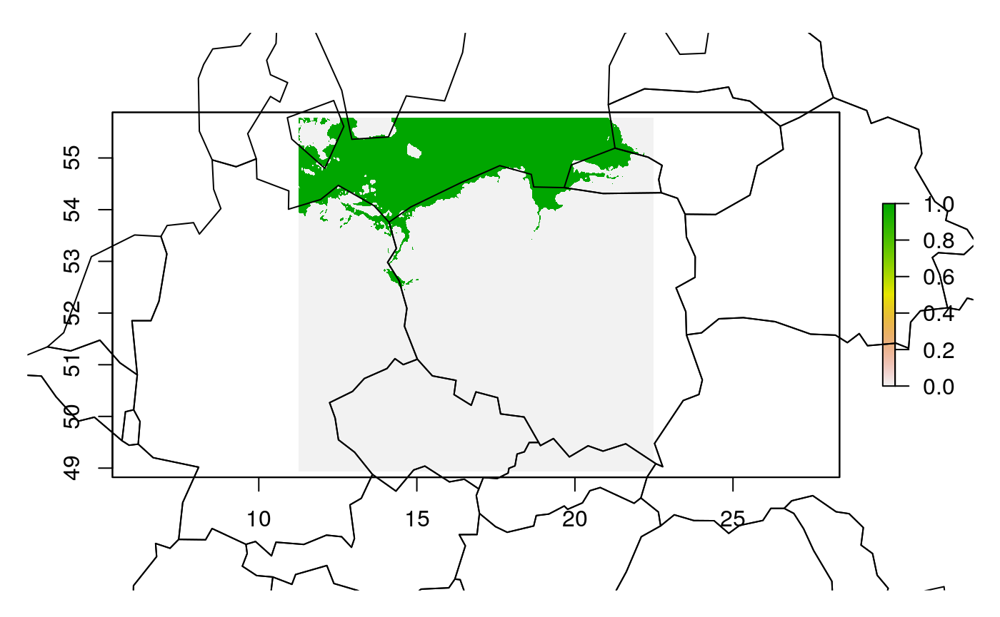

Geocomputation for sea level research
Robin Lovelace, Jakub Nowosad, Jannes Muenchow
2019-03-11
Source:vignettes/sea-level-rise.Rmd
sea-level-rise.RmdIntroduction
Sea level rise (SLR) is a worldwide phenemona with major implications. Although SLR is a global phenomenon, its potentially deadly impacts will vary greatly over the globe, making it well-suited to geographical analysis. The need for reproducibility and scalability of the approach means a computational approach, of the type recommended in the book, is needed.
In terms of the spatial distribution of impacts the main factor is current elevation: low-lying areas closed to the sea are most vulnerable. Elevation in countries is actually dynamic due to glacial isostatic adjustment. However, the rate of change in elevation in most places is slow compared with rapid sea level rise.
How much the sea will rise in the next 10, 100, 1000 and even 10,000 is a subject of scientific research. One thing is for certain: the trend of rising sea levels, illustrated in the figure below, will continue (source: NASA).

One recent analysis suggests 50 m of SLR is likely in the next 10,000 years (note the units in the previous graph are mm, 1000 times less than a meter), with much of that happening in the next 1,000 years (Clark et al. 2016). Their model results provide a range of SLR futures, as illustrated in the figure below:

This vignette will download data for a city and analyse vulnerable areas based on the assumption of 10 m of sea level rise. In the exercises you will be encouraged to re-run the analysis in different places and assuming different levels of SLR. The first stage is to read-in the data:
Read-in data
# aim: demo r-spatial capabilities with slr data
# See https://github.com/geocompr/geostats_18/blob/master/code/geocompr/slr.R
# if(!require(elevatr)) {
# install.packages("elevatr")
# }
# library(elevatr)
library(raster)## Loading required package: splibrary(sf)## Linking to GEOS 3.5.1, GDAL 2.1.2, PROJ 4.9.3# load data
if(!dir.exists("data")) {
download.file("https://github.com/geocompr/geostats_18/releases/download/0.1/data.zip", "data.zip")
unzip("data.zip")
file.rename("pres/geocompr/data/", "data")
}# vector data
plot(spData::world)## Warning: plotting the first 9 out of 10 attributes; use max.plot = 10 to
## plot all
poland = dplyr::filter(spData::world, grepl(pattern = "Pola", name_long))
plot(st_geometry(poland))
# testing elevatr (from readme / vignette)
# data(lake)
# elevation_high = get_elev_raster(lake, z = 14, src = "aws")
# 120 MB"
# elevation = get_elev_raster(lake, z = 9, src = "aws")
# elevation_low = get_elev_raster(lake, z = 4, src = "aws")
# pryr::object_size(elevation)
# pryr::object_size(elevation_low)
# plot(elevation_low)
# mapview::mapview(elevation_low)
# cols = rainbow(5)
# plot(elevation, add = T, col = cols)
# getting a map of the szczecin coastline
# option 1 - via osmdata:
# library(osmdata)
# region = osmdata::getbb(place_name = "cardiff uk", format_out = "sf_polygon")
# region = getbb(place_name = "cardiff uk", format_out = "sf_polygon")
# sf::st_write(region, "data/scz-osm.geojson")
region = sf::read_sf("data/scz-osm.geojson")
(m = mapview::mapview(region)) # not quite what I was after, but a good start
# option 2 - via (new+improved) mapedit
# region_mapedit = mapedit::drawFeatures(map = m)
# sf::write_sf(region_mapedit, "data/scz-mapedit.geojson")
region_mapedit = sf::read_sf("data/scz-mapedit.geojson")
plot(region_mapedit)
region_sp = as(region, "Spatial")
# e = elevatr::get_elev_raster(locations = region_sp, z = 8, src = "aws")
# raster::writeRaster(x = e, filename = "data/scz-elev-z5.tif")
e = raster("data/scz-elev-z5.tif")
x_crs = st_crs(27700)
e_projected = raster::projectRaster(e, crs = x_crs$proj4string)
e_projected## class : RasterLayer
## dimensions : 676, 670, 452920 (nrow, ncol, ncell)
## resolution : 1480, 1470 (x, y)
## extent : 1211971, 2203571, -43607.07, 950112.9 (xmin, xmax, ymin, ymax)
## crs : +proj=tmerc +lat_0=49 +lon_0=-2 +k=0.9996012717 +x_0=400000 +y_0=-100000 +ellps=airy +towgs84=446.448,-125.157,542.06,0.15,0.247,0.842,-20.489 +units=m +no_defs
## source : memory
## names : scz.elev.z5
## values : -111.9658, 2083.274 (min, max)# get points less than 10m above slr
e_mask = e_low = e < 10
plot(e_low)
plot(spData::world, add = T, col = NA)## Warning in plot.sf(spData::world, add = T, col = NA): ignoring all but the
## first attribute
Analysis
e_mask[e > 10] = NA
e_low = mask(e, e_mask)
mapview::mapview(e_low)
# out-takes
# e = raster::getData(name = "SRTM", lon = c(-180, 180), lat = c(-60, 60))
# writeRaster(e_low, "scz-elev-low.tif")
system.time({
r_orig = raster::raster("data/20180816184319_429977190-14-degrees-polish-coast.tif")
plot(r_orig)
})
summary(r_orig)
r_agg = aggregate(r_orig, 100)
res(r_agg)
res(e)
plot(r_agg)
plot(e_low, add = T)
e_resampled = raster::resample(e, r_agg)
plot(values(r_agg), values(e_resampled))
cor(values(r_agg), values(e_resampled))^2
# r = extend(r_agg, e)
# r_low = mask(r, e_mask)
# proportion of region that is at risk from slr
e_low_crop = crop(e_low, scz)
plot(e_low_crop)
e_low_sf = spex::polygonize(e_low_crop)
e_low_intersect = st_intersection(e_low_sf, scz)
plot(scz)
plot(e_low_sf, add = T)
plot(e_low_intersect, add = TRUE, col = "blue")
sum(st_area(e_low_intersect)) / st_area(scz)
# publish
scz_buff = st_buffer(scz, dist = 0)
library(tmap)
scz$col = "red"
m = tm_shape(e_low) +
tm_raster(alpha = 0.5) +
tm_shape(scz_buff) + # not working...
tm_fill(col = "red") +
tm_shape(e_low_intersect) +
tm_polygons() +
tm_shape(poland) +
tm_borders()
m
m2 = mapview::mapview(e_low) + scz
m2
tmap_save(m, "/home/robin/repos/geostats_18/data/scz-map.html")
browseURL("data/scz-map.html")
# elevation data around prague
# prague = osmdata::getbb("prague", format_out = "sf_polygon")
# plot(prague)
# write_sf(prague, "data/prague.geojson")
# prague_elev = get_elev_raster(as(prohonice, "Spatial"), z = 9, src = "aws")
# writeRaster(prague_elev, "data/prague_elev.tif")
prague = read_sf("data/prague.geojson")
prague_elev = raster::raster("data/prague_elev.tif")
plot(prague_elev)
plot(prague, add = TRUE)
# mapview::mapview(prague_elev) +
# mapview::mapview(prague)
# # detour: finding the resolution:
# p = stplanr::geo_select_aeq(shp = scz_mapedit)
# e_projected = projectRaster(e, crs = p$proj4string)
# summary(e)
# res(e)
# res(e_projected)
# e1 = crop(e, extent(e, 1, 2, 1, 2))
# values(e1) = 1:4
# plot(e1)
# e1xy = raster::xyFromCell(e1, cell = 1:ncell(e1))
# e1df = as.data.frame(e1xy)
# e1p = st_as_sf(e1df, coords = c("x", "y"), crs = 4326)
# plot(e1p[1:2, ], cex = 5)
# st_distance(e1p[1, ], e1p[2, ]) # 1.37 km res. (x), 1.49 km res (y)
# st_distance(e1p[1, ], e1p[3, ]) # 1.37 km res. (x), 1.49 km res (y)
#
# # detour: raster -> vector conversion
# e_low_crop = crop(e_low, scz)
# plot(e_low_crop)
# e_low_scz = spPolygons(e_low_crop)
# plot(e_low_scz) # interesting
# class(e_low_scz)
# e_low_sf = st_as_sf(e_low_scz)
# plot(e_low_sf, col = "red") # modern art!Exercises
- Use your geocompuational skills to create a reproducible study of the spatial distribution of the impacts of sea level rise, based on assumptions of 2m, 10m and a worst-case 50m scenario of change.
References
Clark, Peter U., Jeremy D. Shakun, Shaun A. Marcott, Alan C. Mix, Michael Eby, Scott Kulp, Anders Levermann, et al. 2016. “Consequences of Twenty-First-Century Policy for Multi-Millennial Climate and Sea-Level Change.” Nature Climate Change, February. doi:10.1038/nclimate2923.